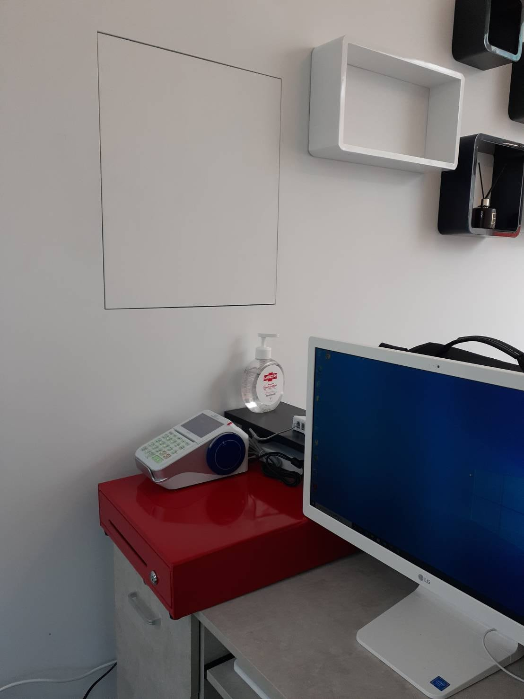

광산구 전역에 카드단말기·포스기·키오스크·토스페이결제기·무인자판기를 설치비 무료, 평균 4일 이내 방문 설치해 드립니다.
다양한 매장이 모여 있는 광산구 전역에, 빠르고 안정적인 결제 환경을 갖출 수 있도록 H포스가 카드단말기·포스기를 설치해 드립니다. 신규 창업 매장은 가맹 신청부터 단말기 설치까지 한 번에, 기존 매장은 단말기 교체와 모든 카드사 일괄 가맹까지 한 번에 처리합니다.
카드·삼성페이·카카오페이·네이버페이·QR을 한 대로 받을 수 있도록 구성하며, 설치비 무료·평균 4일 이내 방문 설치·24시간 A/S로 진행합니다.
광산구 어느 동이든 동 단위로 방문 설치합니다.
매장 환경에 맞춰 유선·무선·이동식·휴대용 카드단말기, 블루투스 단말기, 포스(POS), 토스페이결제기, 무인 키오스크까지 설치하고 관리해 드립니다.
① 음식점·식당 ② 카페·디저트 ③ 편의점·마트 ④ 미용실·네일샵 ⑤ 학원·교습소 ⑥ 병원·약국 ⑦ 헬스장·필라테스 ⑧ 노래방·PC방 ⑨ 무인매장·키오스크 창업 ⑩ 펜션·숙박 등 결제가 발생하는 광산구 모든 업종에 업종별 맞춤으로 설치해 드립니다.